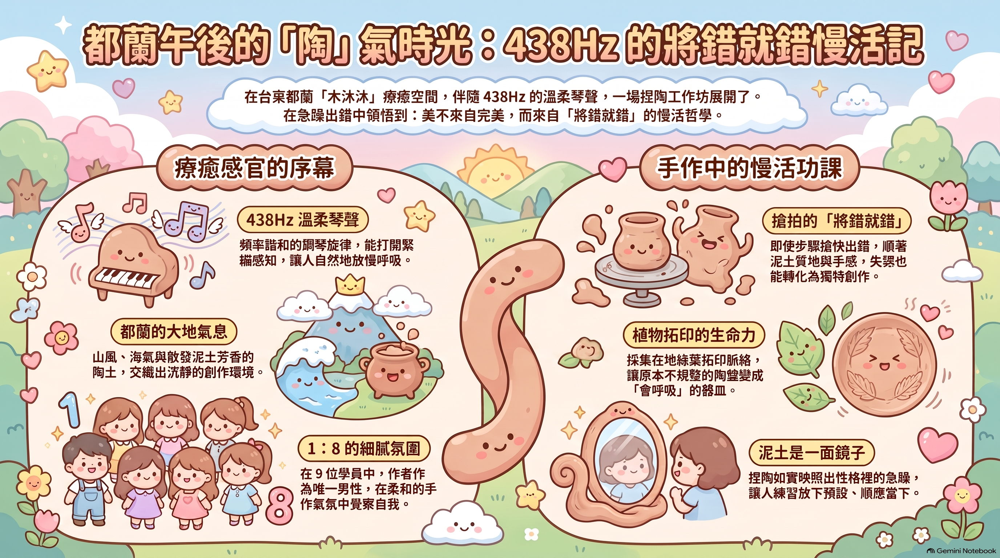
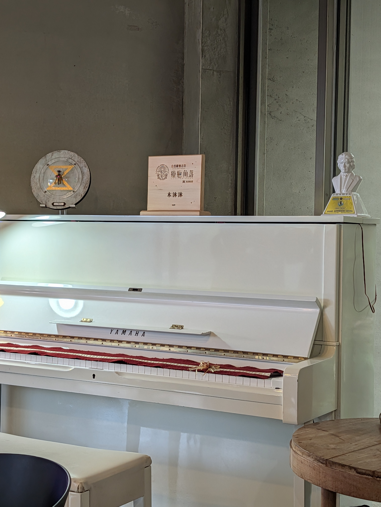
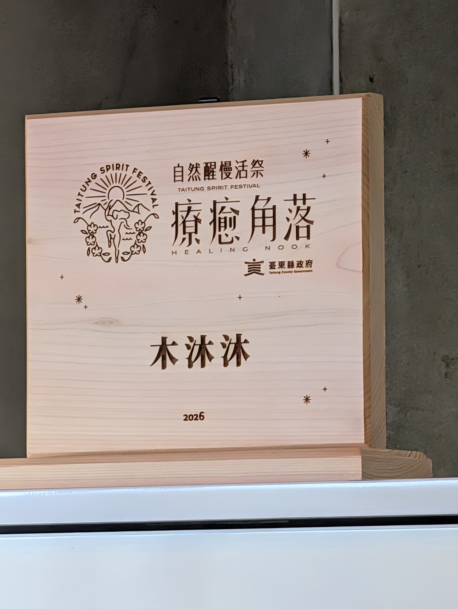
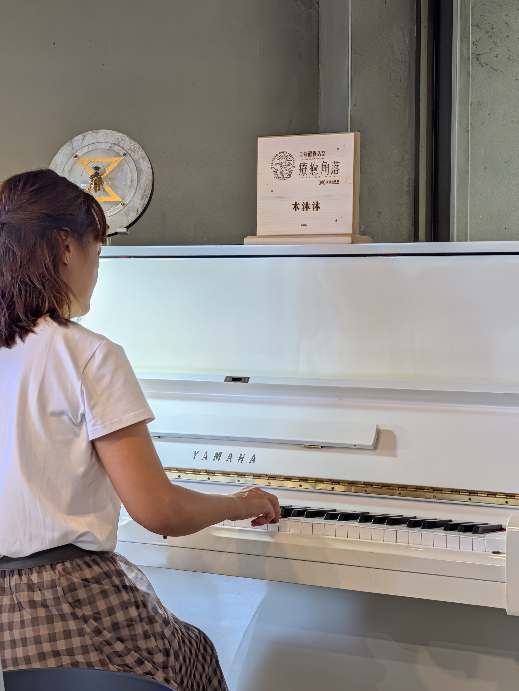
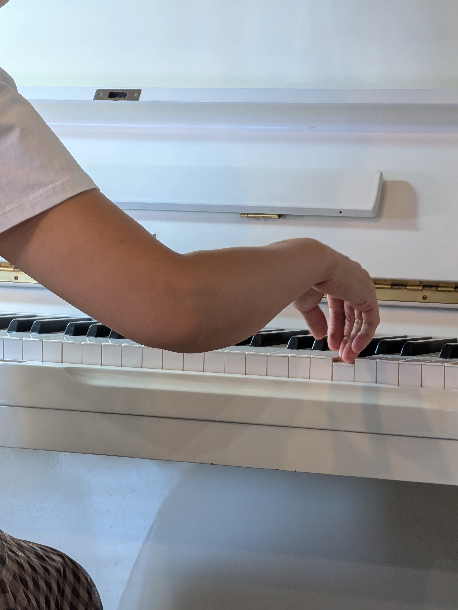
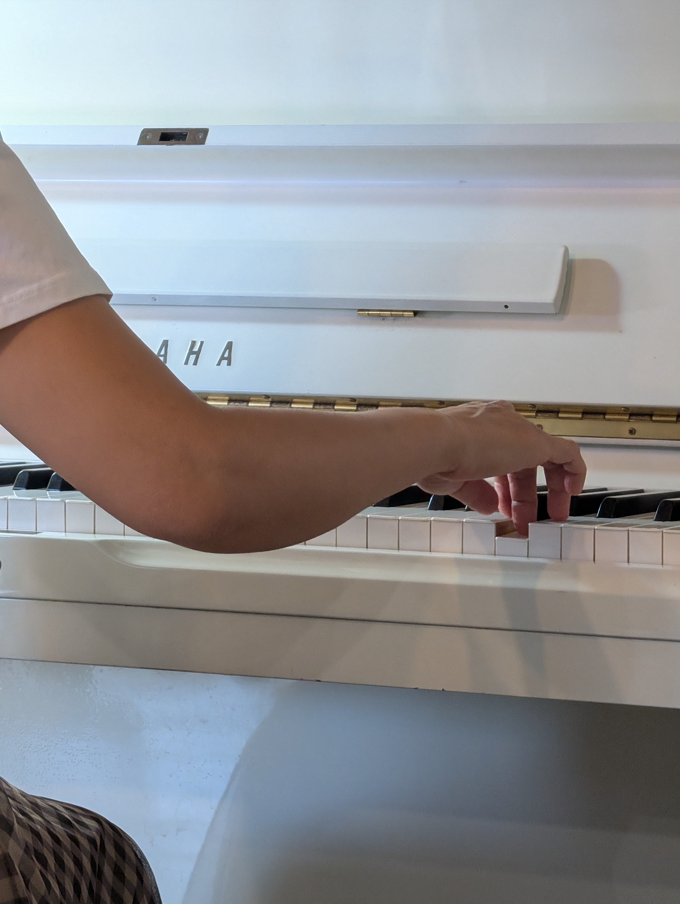

木沐沐 ‧ 療癒角落
438Hz 呢喃琴聲 ｜ 蕙君 老師

自然醒慢活祭認證角落
午後的都蘭，山風與海氣在空氣中流轉。走進臺東縣政府「自然醒慢活祭」認證的療癒角落——木沐沐，白色鋼琴前流淌著蕙君 438Hz 溫柔如水的呢喃琴聲，與長桌上散發著大地氣息的陶土，交織出一段沉靜而舒緩的夏日時光。
這是一場結合聽琴、捏陶與植物拓印的手作工作坊。在細膩柔和的氛圍中，打開身體所有緊繃的感知，讓人慢慢把呼吸放長、把步調放慢。
📖 在 438Hz 琴聲中「將錯就錯」
「性急動手，陶土裡的將錯就錯」
課程才正要開始，洋洋老師還沒來得及正式講解操作步驟與揉捏技法，我那雙習慣了勞作與行動的雙手就已經按捺不住，搶先抓起陶土開始揉捏塑形。看著自己搶拍捏出的陶盤邊緣，我不禁在心裡暗笑：「哎呀，我還是太急了！」
然而，陶藝最迷人之處，正是泥土無條件的包容力。比起追求工業般精緻無瑕的工藝，器皿更應該融入生活，帶有雙手的溫度與樸拙的手感。既然步驟搶了先，那就順著泥土的質地與當下的手感——將錯就錯。
不再執著於規整圓潤的邊界，隨手採集一片都蘭當地的綠葉，將細緻的葉脈紋理輕輕拓印在微濕的陶面上。原本以為的「搶快」與「失誤」，在指尖與泥土的對話間，轉化成了獨一無二、會呼吸的生活器皿。
「琴聲與泥香中的慢活功課」
在捏陶的過程中，背景伴隨著蕙君流淌的鋼琴樂音。頻率諧和的旋律彷彿打開了身體所有緊繃的感知，讓人慢慢把呼吸放長、把步調放慢。
「慢活」從來不是刻意放慢的口號，而是一次次在生活細節中看見自己的慣性，然後學會放下預設、順應當下。這只帶著「急躁」開頭、卻在「將錯就錯」中完成的拓印陶盤，不僅記錄了都蘭午後的美好琴聲，更是提醒自己隨時回歸平靜、學會慢下來的一份珍貴禮物。
"Embracing the Mistake" in 438Hz Harmonies: A Pottery Journey
On a serene afternoon in Dulan, where mountain breezes meet the ocean air, a sensory journey unfolded at Mu Mu Mu—a certified healing space under Taitung's "Spirit Festival." Gentle 438Hz piano melodies played by Huei-jiun resonated through the white piano, blending with the earthy fragrance of raw clay to create a tranquil summer escape.
Rather than pursuing factory-like perfection, handcrafted pieces thrive on authenticity, warmth, and natural flaws. Since I had started too soon, I decided to go with the flow and embrace the mistake. Let go of rigid symmetry, press a fresh Dulan leaf into the damp clay, imprinting its delicate veins directly onto the surface.
Slow living is not just a slogan; it is the practice of noticing our habitual haste and choosing to surrender to the present moment. This botanical clay plate stands as a cherished reminder to pause, breathe, and slow down.
📸 療癒體驗現場特寫





【山海琴音的溫柔迴響】自由書寫與呢喃午茶沙龍
午後的都蘭微風吹拂，20 多位夥伴齊聚「木沐沐｜療癒角落」。在白色鋼琴流淌的 438Hz 呢喃琴聲、北美低音笛與北美原住民直笛的溫柔交織中，大家放慢呼吸，在微風、琴音與茶香咖啡香中展開自由書寫與心靈對話，安頓身心。
沙龍分段流動重點紀實
時光顯影與療癒對話
透過前七場影像深情回顧，在溫馨親近的氛圍中，大家圍坐敞開心扉聊聊生活中貼近自己的療癒瞬間，安頓一路奔波而來的身心節奏。
呢喃琴音 ‧ 自由流動書寫與封存
備妥專屬紙板與紙筆，伴隨蕙君老師流動的鋼琴與北美笛樂音。大家自由漫步至室內琴畔或戶外庭院微風角落，讓思緒如水流淌、落墨封存。
大合照 ‧ 午茶沙龍自在交流
享用木沐沐精心備置的暖心茶飲、咖啡與手作小點。彼此真誠分享落筆當下的感動與體會，在大合照的歡笑中留下珍貴回憶。
現場精選雙影音紀錄 (YouTube)
🎹 438Hz 呢喃鋼琴 ╳ 北美雙笛實況點擊下方播放器即可聆賞蕙君老師在木沐沐現場帶來的純淨旋律，感受微風、木質與琴笛交織的深層撫慰：
「在微風、琴音與茶香咖啡香中相遇，讓生命在山海間自在呼吸。」
— 都蘭 ‧ 木沐沐療癒角落 ｜ 蕙君 老師
聽琴 ‧ 捏陶 ‧ 深呼吸 —— 438Hz 療癒手作工坊
帶有溫度的陶土與琴聲呢喃，邀請您在都蘭山海間慢下來，重拾內心的平靜。
地點： 台東縣都蘭村 木沐沐療癒角落
主奏： 蕙君 老師 (438Hz 呢喃鋼琴演奏)
指導： 姜洋 (洋洋) 老師 (陶藝手作拓印)
體驗內容： 聽琴、捏陶器皿、都蘭在地葉片拓印